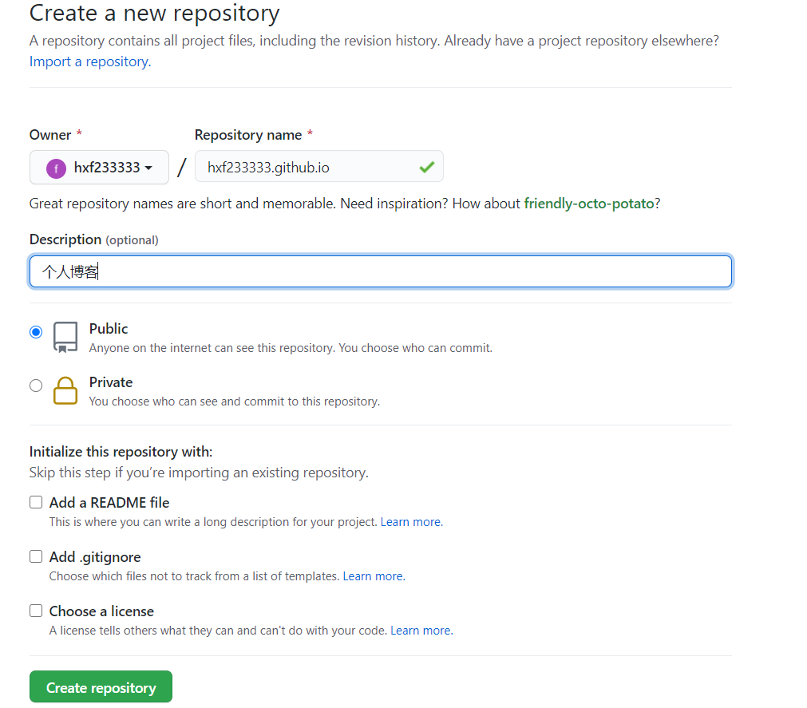
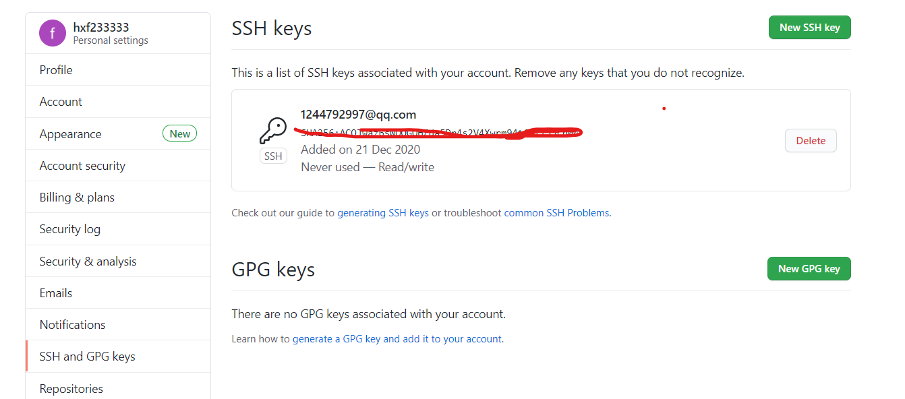

1、准备工作
本地环境
首先在Ubuntu 20.4 LTS系统里部署本地环境，需要安装nodejs和git工具，由于Hexo是基于Node.js的一款博客框架，相比Jekyll框架部署更快更简洁。git是一个分布式版本控制系统，用于项目的版本控制管理。
sudo apt install nodejs # 安装nodejs
sudo apt install git # 安装git
sudo apt install npm #安装npm可在命令行输入相应的检验是否安装成功，如果安装成功会有相应的版本号。
nodejs -v
git --version
npm -v本地安装Hexo
如果以上环境准备好了就可以使用npm命令开始安装Hexo，也可以查看Hexo官方文档。
在命令行输入执行以下命令：
sudo npm install -g hexo-cli # 安装Hexosudo init myBlog # 会在home目录下新建一个myBlog文件夹cd ~/myBlog
sudo npm install # 会在myBlog文件夹下创建所需要的文件新建完成后，使用tree命令查看myBlog文件夹的一级目录如下：
hxf@hxf-virtual-machine:~/myBlog $ tree -L 1
.
├── _config.landscape.yml
├── _config.yml # 网站的配置信息，可以在此配置大部分参数
├── db.json
├── node_modules
├── package.json
├── package-lock.json
├── public
├── scaffolds
├── source # 资源文件夹，包含文章Markdown文件
└── themes # 主题文件夹如果以上过程没有报错，运行hexo s命令，在浏览器中输入http://localhost:4000 回车即可预览本地效果。
2、创建github page
创建一个新仓库
github给用户提供了与用户相同的静态站点，相当于一个二级域名（http://用户名.github.io)，可将同名仓库映射出去。
配置SSH key
要使用git工具首先要配置SSH key，为部署本地博客到github做准备。
首先使用git命令全局配置本地账户：
sudo git config --global user.name "hxf233333"
sudo git config --global user.email "1244792997@qq.com"然后开始生成SSH key
sudo ssh-keygen -t rsa -C '1244792997@qq.com'按提示回车就行，通过cat ~/.ssh/id_rsa.pub可获取到SSH key。
然后确认并添加主机到本机ssh可信列表：
sudo ssh -T git@github.com最后将刚刚获取的SSH key添加到github设置SSH keys里。
3、部署到github
首先打开本地 myBlog 文件夹下的 _config.yml 配置参数，在末尾填上以下配置（注意冒号后面有一个空格）：
然后安装一个部署插件hexo-deployer-git：
sudo npm install hexo-deployer-git --save最后执行以下命令部署上传：
sudo hexo g -d在浏览器访问https://用户名.github.io就可以查看博客。